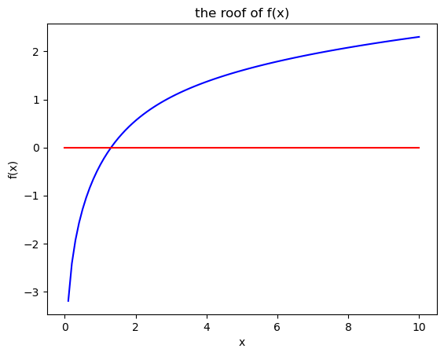

Week 5 — Numerical Methods I — Root-Finding and Optimisation#
Programming and Numerical Methods for Economics (ECNM10115) · The University of Edinburgh
Learning goals. Solving non-linear equations (fsolve, optimize.root) including a 3-country Solow system; unconstrained minimisation of the Rosenbrock function with brute force, BFGS, and Nelder–Mead; bounded (L-BFGS-B, Powell) and constrained (COBYLA) optimisation.
How to work through this notebook: run every cell in order (
Shift+Enter). When you reach a result, pause and predict it before running — that habit is what turns reading into learning. Experiment: change parameters, break things, re-run.
Programming and Numerical Methods for Economics#
Lecture 5: Root Finding and Optimization#
import numpy as np
import matplotlib.pyplot as plt
from matplotlib import cm
import quantecon as qe # I will use qe.tic(), qe.toc() from the quantecon library to time the different algorithms.
# If you do not have the library, just delete all the qe.tic(), qe.toc()
# Or install the library
# The main library for root-finding and optimization
from scipy import optimize
import warnings
warnings.filterwarnings('ignore')
Solving non-linear equations#
Example 1: univariate root-solving. Find the root(s) of f(x):#
$\({f}(x)= log(x) - e^{(-x)}\)$#
def f1_func(x):
y = np.log(x) - np.exp(-x)
return y
grid_x = np.linspace(0,10,100)
y = f1_func(grid_x)
fig, ax = plt.subplots()
ax.plot(grid_x,y, color='b')
ax.plot(grid_x, 0*grid_x, color='r' )
ax.set_xlabel('x')
ax.set_ylabel('f(x)')
ax.set_title('the roof of f(x)')
plt.show()

## Set an initial value
x0= 0.5 # initial value: we need to give an initial guess such
# the algorithm can start iterating to find the solution.
root_f1 = optimize.fsolve(f1_func, x0)
print('the root of the function is x*=', root_f1)
the root of the function is x*= [1.30979959]
Example 2: Solow-Model (non-linear system of 3 equations)#
# Parameter values
A=2
alpha=0.3
delta = 0.1
params = [A,alpha,delta]
Define the system of equations#
def steady_state_ex2(s, params):
# note that s is a vector with size 3: the three saving rates for each country.
A,alpha,delta = params
# from the Solow model we know that k* for each country k* is.
k1 = (s[0]*A/delta)**(1/(1-alpha))
k2 = (s[1]*A/delta)**(1/(1-alpha))
k3 = (s[2]*A/delta)**(1/(1-alpha))
# From the calibration, we know these equations need to be equal to 0 given s
eq_1 = A*k2**(alpha) -1.2*A*k1**(alpha)
eq_2 = A*k3**(alpha) -1.35*A*k1**(alpha)
eq_3 = k3/(A*k3**(alpha)) - 3
return np.array([eq_1, eq_2, eq_3])
Set the system of equations for a single input: the vector s=s1,s2,s3 of saving rates#
ss_func_ex2 = lambda s: steady_state_ex2(s,params)
Solve the system using fsolve. You might also try the routine optimize.root with the different methods.
s0= [0.1, 0.3, 0.5] # initial value:
root_savings = optimize.fsolve(ss_func_ex2, s0)
print('the saving rates s* of the 3 countries are')
print('s1 =',round(root_savings[0],2))
print('s2 =',round(root_savings[1],2))
print('s3 =',round(root_savings[2],2))
the saving rates s* of the 3 countries are
s1 = 0.15
s2 = 0.23
s3 = 0.3
Note that this exercise is tricky in the sense that s_i are bounded between (0,1). However, we were lucky and the results are between (0,1)#
# trying for a different s0 ---you can check and observe that for some x0 the algorithm doesnt converge to the true solution
s0= [0.5, 0.5, 0.5] # initial value
root_savings = optimize.fsolve(ss_func_ex2, s0)
print('The saving rates s* of each of the countries are')
print(root_savings)
The saving rates s* of each of the countries are
[0.14893924 0.22791104 0.3 ]
Numerical Optimization#
Let’s work with the rosenbrock function in 2-D to compare algorithms#
$$ \begin{equation*}#
f(\mathbf{x}) = f(x_1,x_2) = (1-x_1)^2+(x_2-x_1^2)^2
\end{equation*}$$
def rosen_func_2d(x1, x2):
return (1-x1)**2+(x2-x1**2)**2
# For a visual inspection, plot the function
x1_grid = np.linspace(-2,2,100)
x2_grid = np.linspace(-1,3,100)
X1, X2 = np.meshgrid(x1_grid,x2_grid)
f_values = rosen_func_2d(X1, X2)
fig, ax = plt.subplots(figsize=(8, 6), subplot_kw={"projection": "3d"})
surf = ax.plot_surface(X1, X2, f_values, cmap=cm.hsv)
ax.set_zlim(0, 25)
ax.set_xlabel(r'$x_1$')
ax.set_ylabel(r'$x_2$')
ax.set_title('The Rosenbrock function', fontsize=14)
fig.colorbar(surf, shrink=0.5, aspect=10)
plt.show()

For minimization our function needs to be defined in terms of a single input: the vector of control variables (our old x)#
def rosen_func(X):
x1, x2 = X[0], X[1]
return (1-x1)**2+(x2-x1**2)**2
Search Methods:#
1. Minimization using brute-force#
## we need to set the range of x1 and x2whre we want to create the grid.
ranges_X = ((-2,2),(-1,3))
#ranges_X = ((-10,10),(-10,10)) #try with another range.
print('Brute-force method ---------')
qe.tic()
res1 = optimize.brute(rosen_func, ranges_X)
qe.toc()
print(res1)
Brute-force method ---------
TOC: Elapsed: 0:00:0.00
[1.0000081 1.00002356]
Iterative Methods:#
2. Minimization using Quasi-Newton methods: BFGS#
x0 = [0,0]
print('BFGS method ---------')
qe.tic()
res2 = optimize.minimize(rosen_func,x0) # also optimize.minimize(rosen_func,x0,method='BFGS')
qe.toc()
print(res2.x)
# Not bad neither
# minimize provides us with a battery of outcomes including the jacobian, number of iterations, or
# whether the minimization was succesful.
print(res2)
BFGS method ---------
TOC: Elapsed: 0:00:0.00
[0.99999995 0.99999991]
message: Optimization terminated successfully.
success: True
status: 0
fun: 2.9986375725184793e-15
x: [ 1.000e+00 1.000e+00]
nit: 8
jac: [-9.182e-08 4.548e-08]
hess_inv: [[ 5.001e-01 9.993e-01]
[ 9.993e-01 2.499e+00]]
nfev: 30
njev: 10
3. Minimization using derivative-free methods: Nelder-Mead#
x0 = [0,0]
print('Nelder-Mead method ---------')
qe.tic()
res3 = optimize.minimize(rosen_func,x0, method='nelder-mead') # also optimize.minimize(rosen_func,x0,method='BFGS')
qe.toc()
print(res3.x)
# Not bad neither
print(res3)
Nelder-Mead method ---------
TOC: Elapsed: 0:00:0.01
[1.00001608 1.0000338 ]
message: Optimization terminated successfully.
success: True
status: 0
fun: 2.613059385742404e-10
x: [ 1.000e+00 1.000e+00]
nit: 67
nfev: 129
final_simplex: (array([[ 1.000e+00, 1.000e+00],
[ 1.000e+00, 1.000e+00],
[ 1.000e+00, 1.000e+00]]), array([ 2.613e-10, 3.308e-10, 5.691e-10]))
Rosenbrock function in 5-D#
$\(\sum_{i=1}^{N-1} (1-x_i)^2+(x_{i+1}-x_i^2)^2\)$#
# This function is quite ugly and can be simplified with a loop. You'll need to do that for PS4.
def rosen_5d(X):
x1,x2,x3,x4,x5 = X
return (1-X[0])**2+(X[1]-X[0]**2)**2 +(1-X[1])**2+(X[2]-X[1]**2)**2 +(1-X[2])**2+(X[3]-X[2]**2)**2 +(1-X[3])**2+(X[4]-X[3]**2)**2
## Brute-force
ranges_X = ((-2,2),(-2,2),(-2,2),(-2,2),(-2,2))
print('Brute-force method ---------')
qe.tic()
res1 = optimize.brute(rosen_5d, ranges_X)
qe.toc()
print(res1)
# takes a bit of time
Brute-force method ---------
TOC: Elapsed: 0:00:17.16
[1.00002079 1.00002544 1.00002247 1.00002408 0.99997355]
# BFGS
x0 = [0,0,0,0,0]
print('BFGS method ---------')
qe.tic()
res2 = optimize.minimize(rosen_5d,x0)
qe.toc()
print(res2.x)
# quite fast despite N=5
BFGS method ---------
TOC: Elapsed: 0:00:0.01
[1.00000009 1.00000017 1.0000001 0.99999985 0.99999952]
# Nelder-Mead
x0 = [0,0,0,0,0]
print('Nelder-Mead method ---------')
qe.tic()
res3 = optimize.minimize(rosen_5d,x0, method='nelder-mead')
qe.toc()
Nelder-Mead method ---------
TOC: Elapsed: 0:00:0.02
0.025703907012939453
Bounded minimization of the Rosenbrock function ——————–#
bnds = ((0.5, 2), (0.5, 2), (0.5, 2), (0.5, 2),(0.5, 2),)
L-BFGS-B#
x0 = [0.5,0.5,0.5,0.5,0.5]
print('L-BFGS-B method ---------')
qe.tic()
res4 = optimize.minimize(rosen_5d,x0, method='L-BFGS-B', bounds=bnds)
print(res4.x)
qe.toc()
L-BFGS-B method ---------
[0.99999988 0.99999977 1.00000012 0.99999977 0.99999919]
TOC: Elapsed: 0:00:0.02
0.02037525177001953
Powell#
x0 = [0.5,0.5,0.5,0.5,0.5]
print('Powell method ---------')
qe.tic()
res5 = optimize.minimize(rosen_5d,x0, method='powell', bounds=bnds)
print(res5.x)
qe.toc()
Powell method ---------
[1.00000004 1.00000034 1. 1.00000017 0.99999979]
TOC: Elapsed: 0:00:0.11
0.11064839363098145
Constrained minimization of the Rosenbrock function in N=2, constraint:#
$$\begin{align*}#
\underset{x_1,x_2}{\text{Min }} & (1-x_1)^2+(x_2-x_1^2)^2\\
& \text{st: } \\
& x_1^2+x_2^2 \leq 1
\end{align*}$$
# we already computed the N=2 Rosenbrock function before: rosen_func
def rosen_func(X):
x1, x2 = X[0], X[1]
return (1-x1)**2+(x2-x1**2)**2
Define the constraint#
def ineq_con(X):
return -(X[0]**2 + X[1]**2 -1)
# inequality constraints are expressed in the form g(x)-b >= 0
# Thus we need to mulptiply by -1 our constraint.
# the constraint
cons = ({'type': 'ineq', 'fun': ineq_con })
COBYLA method#
qe.tic()
res1 = optimize.minimize(rosen_func,x0, method='COBYLA', constraints=cons)
print(res1.x)
qe.toc()
# Succesful?
print(res1)
[0.80810667 0.58903619 0.48694279 0.50067708 0.55461313]
TOC: Elapsed: 0:00:0.00
message: Optimization terminated successfully.
success: True
status: 1
fun: 0.0409190763312341
x: [ 8.081e-01 5.890e-01 4.869e-01 5.007e-01 5.546e-01]
nfev: 81
maxcv: 1.7527397311312143e-08
SLSQP method#
x0 = [0.5,0.5]
print('SLSQP method ---------')
qe.tic()
res2 = optimize.minimize(rosen_func,x0, method='SLSQP', constraints=cons)
print(res2.x)
qe.toc()
SLSQP method ---------
[0.80816799 0.58895205]
TOC: Elapsed: 0:00:0.00
0.0030519962310791016
Trust Region constrained algoritm#
x0 = [0.5,0.5]
print('trust-constr method ---------')
qe.tic()
res3 = optimize.minimize(rosen_func,x0, method='trust-constr', constraints=cons)
print(res3.x)
qe.toc()
trust-constr method ---------
[0.80816657 0.58894402]
TOC: Elapsed: 0:00:0.04
0.0463261604309082
Before the lab#
Try it: start BFGS and Nelder–Mead from
x0 = [-3, 3]instead of[0, 0]. Which is more robust to a bad starting point? Count function evaluations.The 5-D Rosenbrock function written out by hand is ugly — rewriting it with a loop is part of PS4.
Deeper slides: Optimisation and Value Function Approximation.
Next week: Numerical Methods II — optimisation in economic applications.